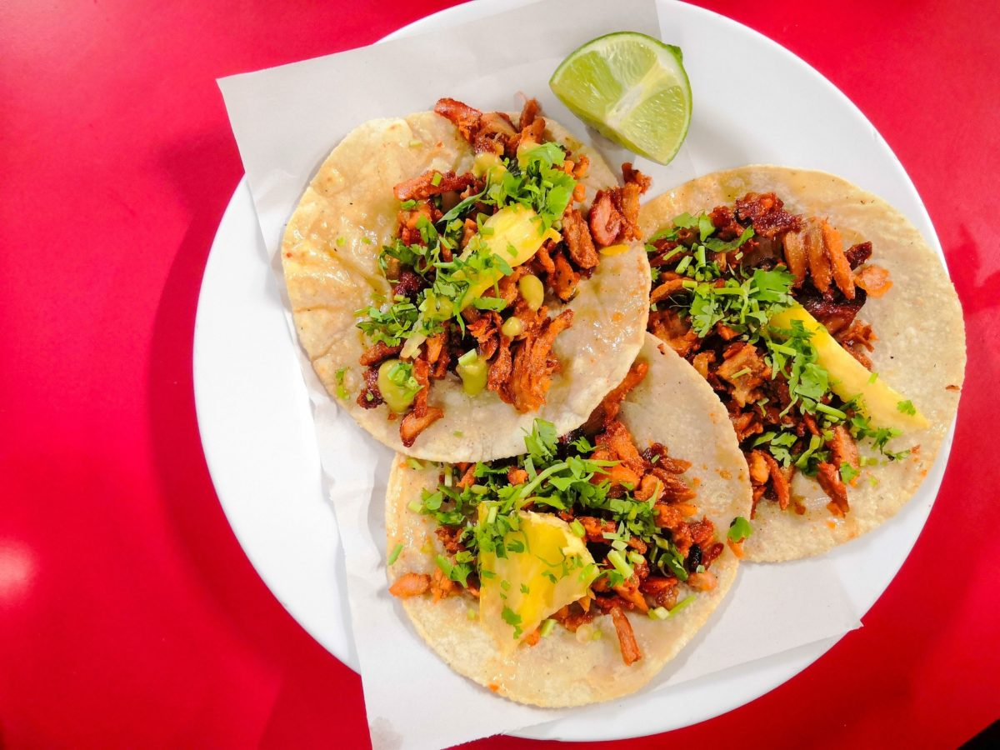

Al Pastor Tacos
Home

Description
Smoky, sweet, and super easy crispy edged roast pork tacos topped with broiled pineapples.
Ingredients
- Dried guajillo peppers
- Pork shoulders
- Cloves garlic peeled
- Chipotle peppers in adobo
- Sugar
- Achiote paste
- Pineapple
- Tortillas
Steps
- Soak the guajillos in a small bowl filled with hot tap water for 15 mins. You can either remove the stems and seeds beforehand, or wait til the peppers are soft and pliable, hold them by the tip, upside down, over the sink, and cut the stems off. The seeds should fall right out.
- Meanwhile, season the pork generously with salt.
- Add guajillos, garlic, chipotle in adobo, sugar, achiote paste, and 1/2 cup pineapple juice to a blender and blend into a smooth marinade.
- Marinate the pork for at least 30 mins and up to 24 hours in the fridge.
- Preheat your oven to 500°F. Arrange the pork in a single layer on another baking sheet. Broil the pork until the edges and corners start to char, about 20 minutes.
- While you wait for your pork to finish, arrange drained pineapple chunks in a single layer on a foil lined baking sheet. Remove the pork and broil pineapples until charred, another 15 minutes.
- Slice meats, fry up, and make tacos.